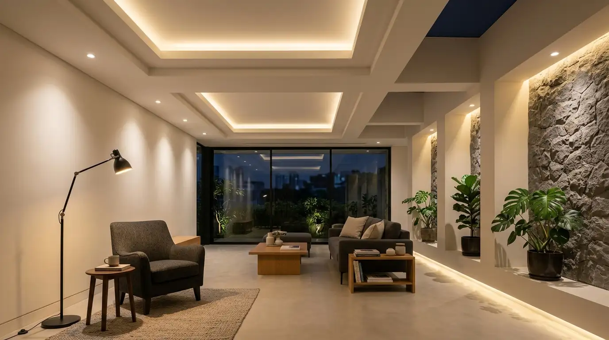
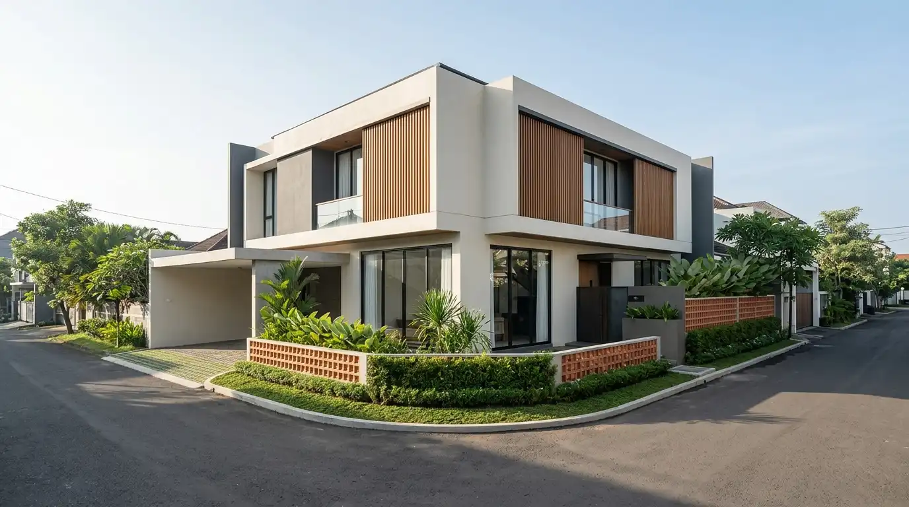
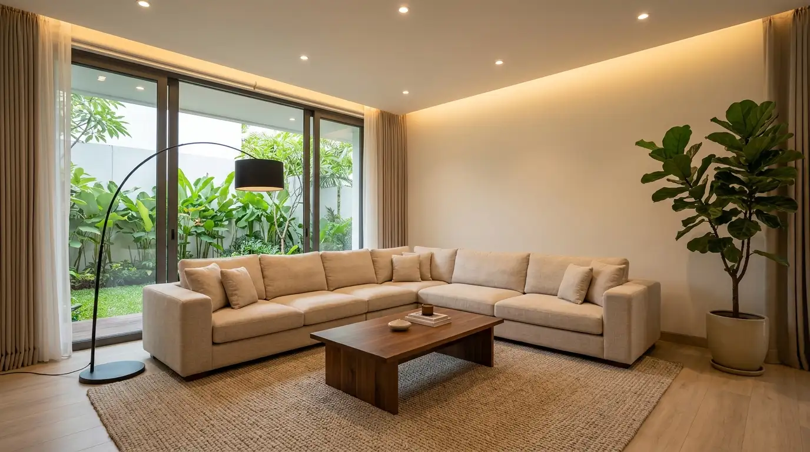
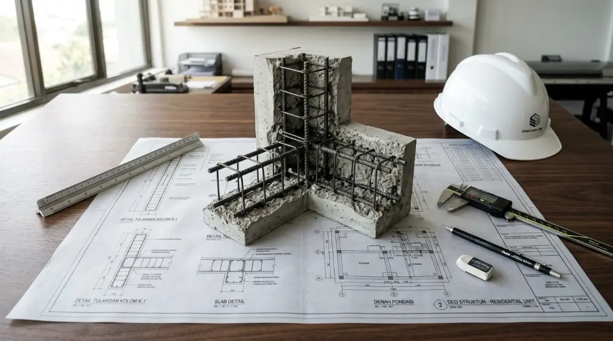
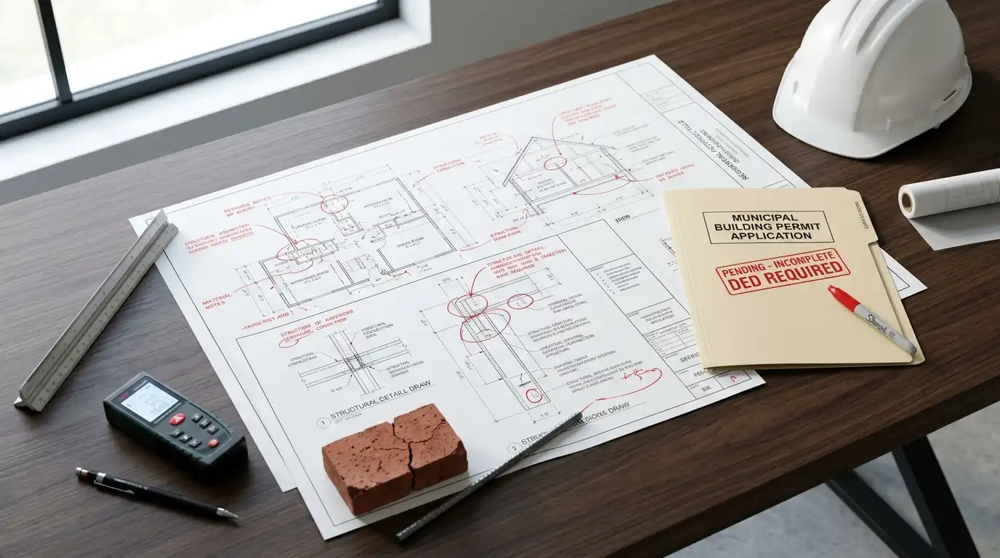
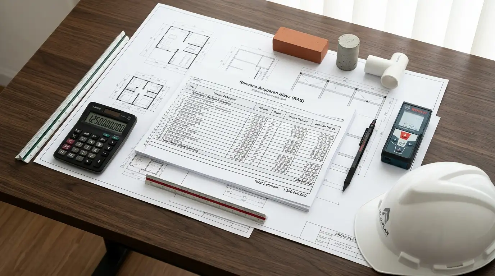
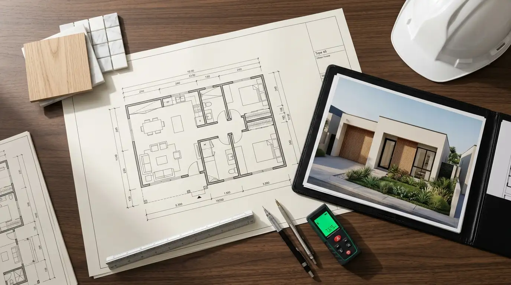
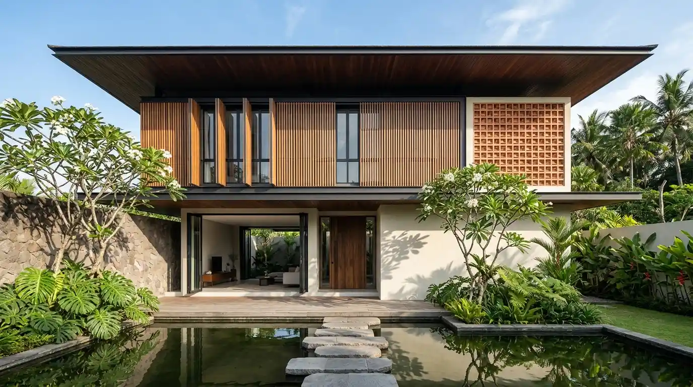
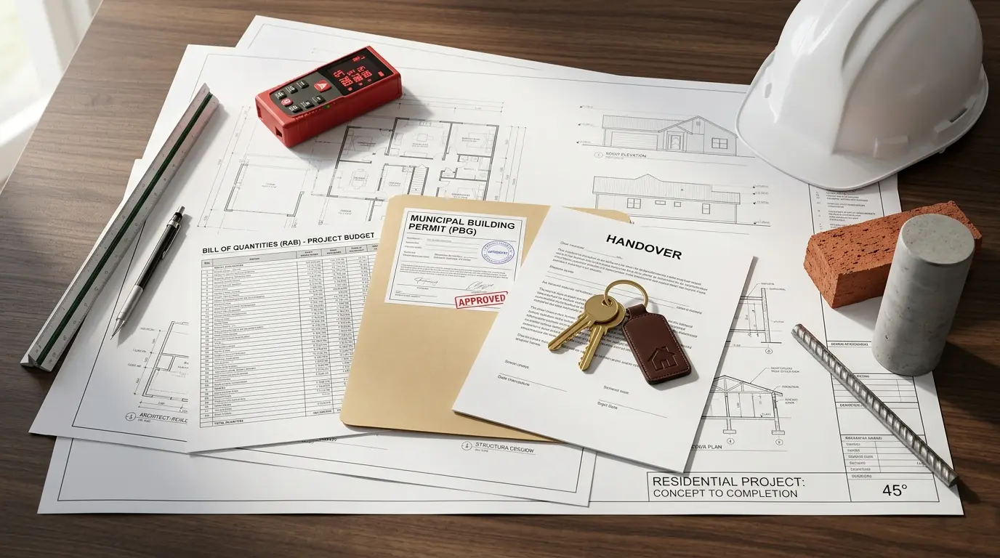

Daftar Artikel Blog
Cara Menata Pencahayaan Rumah Minimalis Agar Tidak Monoton
Cara menata pencahayaan rumah minimalis agar tidak monoton adalah dengan menggabungkan tiga jenis pencahayaan: general lighting, task lighting, dan accent lighting untuk hunian hidup dan hangat.
Baca Selengkapnya Renovasi & Kamar Mandi
Renovasi & Kamar Mandi
Jasa Renovasi Kamar Mandi, Cepat dan Rapi
Jasa renovasi kamar mandi membantu Anda memperbaiki masalah seperti kebocoran, keramik retak, atau tampilan yang sudah usang, hingga renovasi total.
Baca Selengkapnya
Inspirasi Desain Rumah Hook di Lahan Sudut yang Maksimal
Rumah di lahan sudut (hook) punya keunggulan dua sisi fasad, bukaan cahaya alami melimpah, dan potensi taman samping maksimal.
Baca Selengkapnya
Jasa Desain Ruang Keluarga, Hangat dan Nyaman untuk Berkumpul
Jasa desain ruang keluarga membantu Anda menciptakan ruang berkumpul yang nyaman dan hangat, disesuaikan kebiasaan interaksi keluarga.
Baca Selengkapnya
Mengenal Struktur Rangka Beton Bertulang untuk Rumah Tinggal
Struktur rangka beton bertulang memadukan kekuatan tekan beton dan kelenturan tarik baja, penopang beban rumah kokoh dan tahan gempa.
Baca Selengkapnya
Risiko Membangun Rumah Tanpa Gambar Kerja yang Lengkap
Membangun rumah tanpa gambar kerja lengkap berisiko kesalahan ukuran struktur, perizinan PBG tertunda, hingga pembengkakan biaya.
Baca Selengkapnya
Cara Menghemat Biaya Bangun Rumah Tanpa Kurangi Kualitas
Cara menghemat biaya bangun rumah tanpa mengurangi kualitas dimulai dari perencanaan denah efisien, material tepat guna, dan belanja sekaligus.
Baca Selengkapnya
Jasa Desain Rumah Type 45, Solusi Lahan Terbatas
Jasa desain rumah type 45 membantu memaksimalkan lahan terbatas jadi rumah nyaman untuk keluarga kecil, pembagian ruang efisien, dan gambar kerja siap bangun.
Baca Selengkapnya Inspirasi & Interior
Inspirasi & Interior
6 Ide Desain Ruang Kerja di Rumah yang Produktif
Ruang kerja di rumah yang produktif idealnya memiliki pencahayaan alami cukup, meja dan kursi ergonomis, serta penyimpanan rapi.
Baca Selengkapnya Renovasi & Interior
Renovasi & Interior
Jasa Renovasi Dapur Rumah, Ubah Tampilan Tanpa Bongkar Total
Jasa renovasi dapur rumah membantu Anda memperbarui tampilan dan fungsi dapur, mulai dari kitchen set, utilitas, hingga layout kerja tanpa bongkar total.
Baca Selengkapnya Material & Renovasi
Material & Renovasi
Perbedaan Lantai Vinyl dan Keramik, Mana yang Cocok?
Perbedaan utama lantai vinyl dan keramik terletak pada bahan dan cara pemasangan. Keramik tahan lama dan tahan air, sementara vinyl lebih hangat diinjak dan pasangnya cepat.
Baca Selengkapnya
Jasa Desain Rumah Tropis Modern, Sejuk dan Estetik Sepanjang Tahun
Jasa desain rumah tropis modern menggabungkan tampilan estetis kontemporer dengan strategi iklim ventilasi silang, atap overstek lebar, dan material tahan cuaca.
Baca Selengkapnya
Tahapan Proses Membangun Rumah dari Awal Sampai Selesai
Panduan lengkap 6 tahap membangun rumah dari awal sampai serah terima kunci: konsultasi konsep, perancangan gambar kerja DED, RAB, hingga izin PBG.
Baca Selengkapnya Dekorasi & Interior
Dekorasi & Interior
7 Ide Desain Kamar Tidur Utama Agar Lebih Nyaman dan Estetik
Kamar tidur utama yang nyaman dan estetik bisa diwujudkan dengan tujuh langkah sederhana: warna dinding menenangkan, pencahayaan alami, posisi tempat tidur, hingga sirkulasi udara lancar.
Baca Selengkapnya Tips Membangun
Tips Membangun
Jasa Bangun Rumah dari Nol, dari Desain hingga Siap Huni
Layanan satu pintu mulai konsultasi, perencanaan arsitektur, gambar kerja DED, RAB terintegrasi, PBG, hingga pelaksanaan konstruksi fisik siap huni.
Baca Selengkapnya Material & Renovasi
Material & Renovasi
Perbedaan Plafon Gypsum dan PVC, Mana yang Lebih Cocok?
Perbedaan utama plafon gypsum dan PVC terletak pada ketahanan terhadap air, fleksibilitas bentuk drop ceiling, serta kesesuaian ruangan.
Baca Selengkapnya Inspirasi Desain
Inspirasi Desain
Inspirasi Fasad Rumah Minimalis 1 Lantai yang Elegan
Panduan inspirasi fasad rumah minimalis 1 lantai yang elegan biasanya mengandalkan garis bersih, kombinasi 2-3 warna, aksen material alami, dan atap bertingkat.
Baca Selengkapnya Layanan Desain & Arsitektur
Layanan Desain & Arsitektur
Jasa Desain Rumah 2 Lantai Modern, Hemat Lahan dan Efisien
Solusi memaksimalkan fungsi lahan terbatas dengan membangun ke atas: efisien, estetis, hemat luas tanah, dengan pemisahan zonasi publik-privat yang ideal dan gambar kerja lengkap siap konstruksi.
Baca Selengkapnya Estimasi Biaya & RAB
Estimasi Biaya & RAB
Mengenal Apa Itu BoQ (Bill of Quantity) dalam Proyek Bangun Rumah
BoQ adalah daftar rinci volume setiap pekerjaan bangun rumah tanpa mencantumkan harga, menjadi dasar esensial penyusunan RAB dan tender kontraktor.
Baca Selengkapnya Dekorasi & Interior
Dekorasi & Interior
8 Ide Dekorasi Ruang Tamu Kecil Agar Terlihat Lebih Luas
Ruang tamu kecil berukuran 3x3 meter sekalipun bisa terlihat lebih luas dengan pemilihan furnitur pas berkaki ramping, warna terang, pantulan cermin, dan pencahayaan berlapis.
Baca Selengkapnya Pengawasan & Konstruksi
Pengawasan & Konstruksi
Jasa Pengawasan Konstruksi Rumah Agar Sesuai Gambar & Anggaran
Layanan pendampingan profesional di lapangan untuk memastikan pelaksanaan fisik bangunan tukang atau kontraktor sesuai gambar kerja DED, spesifikasi material, dan batas anggaran RAB.
Baca Selengkapnya Tips Interior & Warna
Tips Interior & Warna
Cara Memilih Warna Cat Rumah Minimalis Agar Tidak Salah Pilih
Panduan menentukan warna netral, satu aksen elegan, arah cahaya matahari, dan tips uji sampel dinding agar warna cat rumah minimalis tidak salah pilih.
Baca Selengkapnya Inspirasi Desain
Inspirasi Desain
Contoh Denah Rumah 2 Lantai Type 60 yang Efisien dan Nyaman
Denah rumah 2 lantai type 60 yang efisien membagi ruang publik di lantai dasar dan privat di lantai atas untuk 3 kamar tidur tanpa terasa sempit.
Baca Selengkapnya Gambar Kerja & DED
Gambar Kerja & DED
Jasa Pembuatan Gambar Kerja DED Lengkap (Arsitektur, Struktur, Instalasi)
Dokumen teknis rumah mencakup arsitektur, struktur pondasi-kolom-balok, dan instalasi MEP listrik-air sebagai acuan tukang dan syarat wajib izin PBG.
Baca Selengkapnya Tips Memilih Arsitek
Tips Memilih Arsitek
5 Kriteria Utama Cara Memilih Jasa Arsitek Rumah yang Profesional
Lima kriteria utama memilih arsitek: portofolio nyata, kejelasan struktur biaya, komunikasi responsif, kelengkapan output teknis, dan ulasan klien.
Baca Selengkapnya Tips Membangun
Tips Membangun
Mengapa Estimasi Biaya / RAB Sangat Vital Sebelum Mulai Bangun Rumah
Estimasi biaya atau RAB penting dibuat sebelum mulai membangun rumah sebagai acuan berapa uang yang benar-benar dibutuhkan dari pondasi sampai finishing.
Baca Selengkapnya Biaya & Tarif
Biaya & Tarif
Harga Jasa Arsitek Per Meter Persegi 2026: Tarif Transparan & Komponennya
Harga jasa arsitek rumah per meter persegi di Indonesia berkisar Rp75.000–Rp200.000/m² sesuai kompleksitas desain.
Baca Selengkapnya Izin Bangunan
Izin Bangunan
Panduan Cara Mengurus PBG (Pengganti IMB) untuk Rumah Tinggal
PBG adalah perizinan wajib pengganti IMB sejak PP No. 16 Tahun 2021 sebelum memulai konstruksi fisik rumah tinggal.
Baca Selengkapnya 3D Visualisasi
3D Visualisasi
Kumpulan Contoh 3D Visualisasi Arsitektur Rendition Sangat Riil
Contoh 3D visualisasi arsitektur photorealistic menampilkan detail tekstur material, pencahayaan alami, dan proporsi ruang yang hampir menyerupai foto asli.
Baca Selengkapnya Tips Membangun
Tips Membangun
Jasa Pembuatan RAB Rumah Profesional untuk Pengajuan KPR & Kontraktor
Jasa pembuatan RAB rumah profesional menyusun rincian anggaran biaya konstruksi berdasarkan gambar kerja dan AHSP terkini.
Baca Selengkapnya 3D Visualisasi
3D Visualisasi
Pentingnya Jasa 3D Visualisasi: Manfaat Render Realistis Sebelum Bangun
Manfaat utama jasa 3D visualisasi rendering rumah adalah melihat hasil akhir secara realistis sebelum konstruksi dimulai.
Baca Selengkapnya Inspirasi Desain
Inspirasi Desain
Konsep Arsitektur Rumah Modern Tropis: Mewah dan Sejuk Sehari-hari
Konsep arsitektur rumah modern tropis menggabungkan garis desain modern yang bersih dengan strategi bioklimatik khas iklim tropis.
Baca Selengkapnya Layanan Desain
Layanan Desain
Jasa Arsitek Rumah Minimalis Profesional: Paket Desain Siap Bangun
Jasa arsitek rumah minimalis profesional mencakup konsultasi konsep, desain arsitektur, gambar kerja/DED, hingga RAB dalam satu paket siap bangun.
Baca Selengkapnya Tips Membangun
Tips Membangun
Cara Menghitung RAB Rumah Tinggal Secara Akurat dan Praktis
Cara menghitung RAB akurat dengan mengalikan volume item pekerjaan dengan Analisis Harga Satuan Pekerjaan (AHSP) wilayah.
Baca Selengkapnya Interior
Interior
7 Tren Desain Interior Rumah Minimalis & Modern Tahun 2026
Tren interior 2026 mengarah pada nuansa hangat dan fungsional: warm minimalism, earthy tone, material alami, hingga smart home.
Baca Selengkapnya Interior
Interior
Jasa Desain Interior Rumah Tinggal Profesional: Wujudkan Ruangan Estetik
Layanan jasa desain interior hunian tinggal profesional mencakup konsultasi konsep, moodboard, denah ergonomis, hingga pengawasan eksekusi.
Baca Selengkapnya Inspirasi Desain
Inspirasi Desain
Mengenal Perbedaan Rumah Minimalis dan Modern Kontemporer
Perbedaan filosofi desain: kesederhanaan geometris minimalis vs eksplorasi bentuk ekspresif modern kontemporer.
Baca Selengkapnya Tips Renovasi
Tips Renovasi
Checklist Wajib Sebelum Merenovasi Rumah Lama Menjadi Minimalis
7 hal wajib diperiksa: struktur, kelembapan, atap, kelayakan instalasi listrik, plumbing, PBG, dan dana cadangan.
Baca Selengkapnya Tips Membangun
Tips Membangun
Mengenal Apa Itu Gambar Kerja atau DED (Detail Engineering Design) Rumah
Dokumen teknis acuan mutlak kontraktor di lapangan, dasar RAB akurat, dan syarat izin PBG.
Baca Selengkapnya Renovasi
Renovasi
Jasa Renovasi Rumah Terpercaya & Bergaransi: Survey Gratis & Tukang Ahli
Layanan renovasi rumah tepercaya dengan survey gratis, RAB transparan, dan garansi tertulis resmi.
Baca Selengkapnya Inspirasi Desain
Inspirasi Desain
15 Ide Desain Rumah Minimalis Modern untuk Lahan Terbatas
Ide desain rumah minimalis modern untuk lahan terbatas berfokus pada efisiensi ruang, void pencahayaan, dan sirkulasi udara.
Baca Selengkapnya Interior
Interior
Tren Desain Interior 2026: Minimalis Natural yang Semakin Populer
Eksplorasi tren interior 2026 yang berfokus pada material alami, warna tanah hangat, dan pencahayaan harmonis.
Baca Selengkapnya Tips Membangun
Tips Membangun
Cara Membuat RAB Rumah yang Akurat: Panduan untuk Pemula
Rencana Anggaran Biaya (RAB) yang tepat adalah kunci suksesnya pembangunan rumah. Pelajari cara menyusunnya dengan benar.
Baca Selengkapnya Inspirasi Desain
Inspirasi Desain
Arsitektur Tropis: Mendesain Rumah yang Nyaman di Iklim Indonesia
Pendekatan desain arsitektur tropis yang memanfaatkan ventilasi alami, atap miring, dan taman untuk menciptakan hunian yang sejuk dan nyaman.
Baca Selengkapnya Inspirasi Desain
Inspirasi Desain
7 Inspirasi Desain Rumah Minimalis Modern untuk Lahan Terbatas
Memiliki lahan sempit bukan berarti harus mengorbankan kenyamanan dan estetika. Simak 7 inspirasi desain rumah minimalis modern yang memaksimalkan setiap meter persegi lahan Anda.
Baca Selengkapnya Renovasi
Renovasi
5 Kesalahan Umum dalam Renovasi Rumah yang Harus Dihindari
Renovasi rumah bisa menjadi pengalaman memuaskan atau mimpi buruk — tergantung bagaimana perencanaannya dilakukan. Hindari 5 kesalahan ini.
Baca Selengkapnya Tips Membangun
Tips Membangun
Mengapa Gambar Kerja DED Sangat Penting Sebelum Membangun Rumah?
Banyak pemilik rumah melewatkan tahap gambar kerja. Ketahui mengapa keputusan ini bisa berujung pada pembengkakan biaya dan pekerjaan ulang.
Baca Selengkapnya